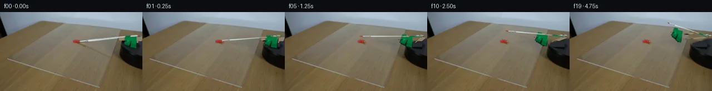

![首帧]()

Round 00
2026-11-05T14:26:27.991277+00:00像素候选变化代码 +206/−0inspection 更新
pixels b6a76d5e7f60462c · code 52f1af46ea28c2ba
查看本轮 generate.py 真实 diff
--- previous/generate.py
+++ current/generate.py
@@ -0,0 +1,206 @@
+"""Single-image continuation by local pixel synthesis; no learned models."""
+from pathlib import Path
+import math
+import numpy as np
+from PIL import Image, ImageDraw, ImageFilter
+import cv2
+from scipy.ndimage import map_coordinates
+import artifact_io
+
+ROOT = Path(__file__).resolve().parent
+S = 4
+W, H = 256, 144
+source = np.asarray(Image.open(ROOT/'first_frame.png').convert('RGB'))
+rng = np.random.default_rng(132)
+
+# Camera projection of planar rotation. A horizontal-plane circle projects
+# to a shallow ellipse in this oblique tabletop view.
+pivot = np.array([248.0, 44.3])
+compression = .29
+angle_total = math.radians(67)
+tip0 = np.array([140.0, 53.6])
+end0 = np.array([247.4, 44.2])
+
+def rotated(p, theta):
+ q = np.array(p, dtype=float)-pivot
+ q[1] /= compression
+ c,s = math.cos(theta),math.sin(theta)
+ return pivot + np.array([c*q[0]-s*q[1], compression*(s*q[0]+c*q[1])])
+
+# Remove only the original moving pieces. Restore the sharp acrylic edge
+# where it crosses the shadow and shaft cleanup regions.
+mask = np.zeros((H,W), np.uint8)
+cv2.line(mask, (144,53), (255,43), 255, 5, cv2.LINE_AA)
+cv2.line(mask, (143,57), (211,83), 255, 5, cv2.LINE_AA)
+# The bracket and backing bar rotate together on the fixed black base.
+cv2.fillPoly(mask, [np.array([(214,46),(223,45),(226,42),(256,41),
+ (256,55),(246,56),(246,67),(231,65),
+ (218,61),(218,53),(214,53)], np.int32)], 255)
+base = cv2.inpaint(source, mask, 4, cv2.INPAINT_TELEA)
+# Keep the paint and its base shading intact.
+base[49:59, 129:144] = source[49:59,129:144]
+# Reconstruct the disk surface exposed under the green fixture by a dark,
+# subtly varying extrapolation of its photographed top. Its rim stays fixed.
+for y in range(52,68):
+ for x in range(217,256):
+ if mask[y,x] and ((x>220 and y>55) or (x>231 and y>52)):
+ refx=min(255,max(x,249))
+ refy=min(79, y+15)
+ # The top is lit more brightly than the lower side of the disk.
+ color=source[refy,refx].astype(float)
+ base[y,x]=np.clip(color + np.array([1,3,3]),0,255)
+# Restore a short section of acrylic's right edge damaged by cleanup.
+edge_a=np.array([221.0,31.0]); edge_b=np.array([178.0,138.0])
+for y in range(36,94):
+ xx=int(round(221-(y-31)*43/107))
+ for x in range(xx-1,xx+2):
+ if 0<=x<W and mask[y,x] and y>55:
+ base[y,x]=source[y,x]
+Image.fromarray(base).save(ROOT/'.tmp/background.png')
+
+# Photographed fixture texture, separated into the wood backing and green
+# vertical clamp. The clamp rotates as an upright object, rather than having
+# its vertical height interpreted as tabletop depth.
+yy,xx=np.mgrid[:H,:W]
+green = ((source[:,:,1].astype(int)>source[:,:,0].astype(int)*1.3)
+ & (source[:,:,1].astype(int)>source[:,:,2].astype(int)*1.1)
+ & (xx>=217)&(xx<=246)&(yy>=42)&(yy<=67))
+green_mask=cv2.GaussianBlur(green.astype(np.float32),(3,3),.45)
+wood_mask=np.zeros((H,W),np.uint8)
+cv2.fillPoly(wood_mask,[np.array([(214,47),(225,46),(225,43),(255,42),
+ (255,52),(247,53),(247,56),(244,56),
+ (244,51),(215,53)],np.int32)],255)
+wood_mask=(wood_mask.astype(float)/255)*(1-green_mask)
+# White handle must belong to the brush, not the backing-board sprite.
+rod_v=end0-tip0
+rod_l=np.linalg.norm(rod_v); rod_n=np.array([-rod_v[1],rod_v[0]])/rod_l
+old_u=((xx-tip0[0])*rod_v[0]+(yy-tip0[1])*rod_v[1])/(rod_l**2)
+old_d=(xx-tip0[0])*rod_n[0]+(yy-tip0[1])*rod_n[1]
+wood_mask[np.logical_and.reduce([old_u>=0,old_u<=1.1,abs(old_d)<1.9])]=0
+
+def composite_sprite(canvas, alpha, matrix):
+ shape=(W*S,H*S)
+ pre=source.astype(np.float32)*alpha[:,:,None]
+ # Upsample both before the warp to retain source photographic softness.
+ pre=cv2.resize(pre,shape,interpolation=cv2.INTER_CUBIC)
+ a=cv2.resize(alpha.astype(np.float32),shape,interpolation=cv2.INTER_CUBIC)
+ mat=matrix.copy();mat[:,2]*=S
… diff truncated; 119 more lines …